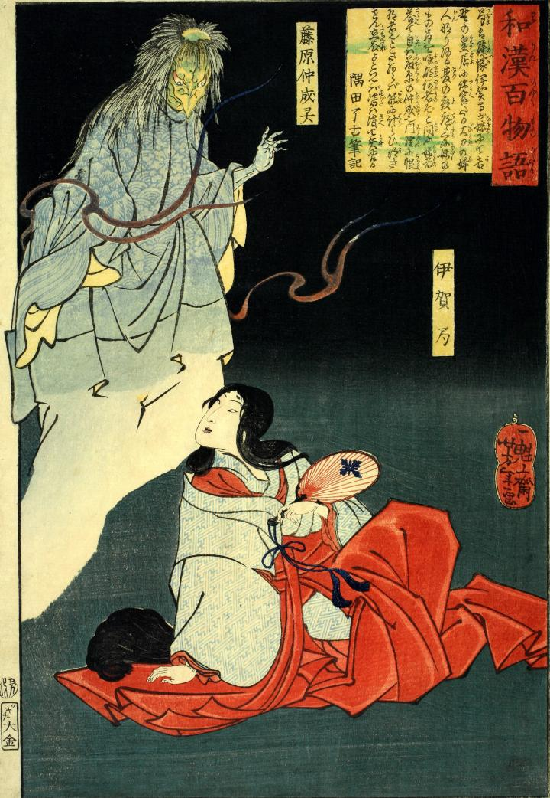

霊；レイ，天狗；テング

夜中、伊賀局の前に出現した藤原仲成の霊。炎をまとっている。緑色の肌に嘴を持つ烏天狗のような姿をしている。
著作者：一魁齋芳年（月岡芳年）／出典：親書誌：U426_nichibunken_0069：藤原仲成霊と伊賀局；フジワラノナカナリノレイトイガノツボネ／日付：2005／資源識別子：U426_nichibunken_0069_0001_0000
Copyright (c)2010- International Research Center for Japanese Studies, Kyoto, Japan. All rights reserved.